Table of Contents
Synthesis and verification of buck controller
Buck converter is a voltage step down and current step up converter. It comprises an analogue buck and its digital control logic as shown in the following diagram. Your task in this tutorial is to formally specify, synthesise and verify the control circuitry of the buck.
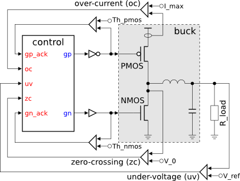
The controller switches the power regulating PMOS and NMOS transistors ON and OFF as a reaction to under-voltage (UV), over-current (OC) and zero-crossing (ZC) conditions. These conditions are detected and signalled by a set of specialised sensors implemented as comparators of measured current and voltage levels against some reference values (I_max, V_0, V_ref). Note that the gp and gn signals are buffered to drive the very large power regulating transistors (occupy more than 50% of the buck area) and their effect on the buck can be significantly delayed. Therefore, the controller is explicitly notified (by the gp_ack and gn_ack signals) when the power transistor threshold levels (Th_pmos and Th_nmos) are crossed.
The operation of a buck is usually specified in an intuitive, but rather informal way, e.g. by enumerating the possible sequences of detected conditions and describing the intended reaction to them, as in the following phase diagram. 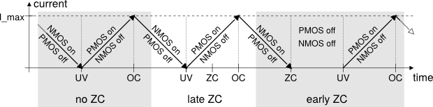
This specification reveals an alternation of the UV and OC conditions which are handled by switching the power regulating PMOS and NMOS transistors of the buck ON and OFF. Detection of the ZC condition after UV does not change this behaviour, however, if ZC is detected before UV then both the PMOS and NMOS transistors remain OFF until the UV event.
It is important to note that in order to avoid a short-circuit the PMOS and NMOS transistors of the buck must never be ON at the same time.
Modelling
According to the phase diagram there are three distinctive scenarios to capture:
- no ZC – UV happens without ZC;
- late ZC – UV is followed by ZC;
- early ZC – UV happens after ZC.
Let us first capture the no ZC scenario as an STG.
The resulting STG listing the sequence of signal events for this scenario is shown in the following diagram. Save this model as stg-buck-scenario1_no_zc file.
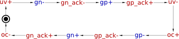
The scenario for late ZC is formalised in a very similar way. Both phases of ZC just happen concurrently with setting NMOS transistor OFF and PMOS transistor ON.
- Copy and save the no ZC scenario with new name stg-buck-scenario2_late_zc.
- Create two input signal transitions
zc+andzc-. - Connect
uv+tozc+. - Connect
zc+tozc-. - Connect
zc-touv-.
The resulting STG should look similar to the following diagram. Do not forget to save the work!
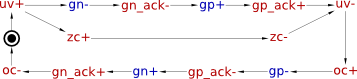
The scenario for early arrival of ZC is a bit different. Here the NMOS transistor needs to be switched OFF as soon as ZC is detected, without waiting for UV. However, switching the PMOS transistor ON is still delayed till UV condition.
- Copy and save the late ZC model under new name stg-buck-scenario3_early_zc.
- Delete incoming and outgoing arcs of
uv+andzc+transitions (just select the arc and press Delete). - Connect place
p0tozc+andzc+togn-. - Connect
zc+touv+anduv+togp+. - Connect
gp+tozc-. - Rearrange transitions to make the STG look nicer (using the selection tool) and save the work.
The STG for early ZC scenario should look similar to the following diagram.
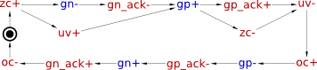
In order to produce an implementation capable of handling all of the scenarios, these STGs need to be merged into a single specification.One can see that all three STGs have ‘compatible’ initial states, that is all common input and output signals are set to the same values initially. Therefore one can merge the initially marked place in the three STGs and obtain a combined specification for buck control.
- Create a new STG work called stg-buck-scenarios_merged.
- Insert the STG for no ZC scenario by selecting File→Merge work… menu item and choosing the stg-buck-scenario1_no_zc file. After insertion the whole STG is selected - drag-and-drop it aside of the centre as the following steps will insert STGs there.
- Similarly insert the STG for early ZC scenario (stg-buck-scenario3_early_zc file) and drag it below the no ZC scenario.
- Finally insert the STG for late ZC scenario (stg-buck-scenario2_late_zc file) and drag it above the previously inserted ones.
- Now as you have STGs for all three scenarios in the same work space remove the initial place in two of the scenarios (e.g. in late ZC and early ZC) and reuse the remaining place instead.
The STG combining all three scenarios should look like the following diagram. Do not forget to save the work!
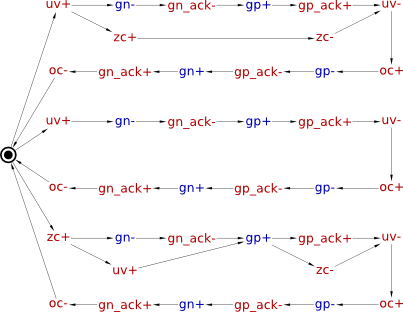
Note that this STG is non-deterministic, e.g. after uv+ fires the STG can end up in either of the two possible states. Non-determinism is common in scenario-based modelling, and can be very powerful and expressive. Occasionally, the scenarios may impose conflicting requirements on the system (e.g. two scenarios may have a common prefix, with one of them requiring and the other forbidding the circuit to produce a particular output after this prefix). Such conflicting requirements can be detected during verification. In this model, however, the scenarios are compatible.
Optional simplification
Once the initially marked places are merged, one can notice that three transitions oc- leading to it can also be merged because their preceding states are ‘compatible’. This process continues with signal event gn_ack+, and so on, ‘zipping’ the common paths of the STGs together. The simplified STG specification of the buck control is as follows; save it as stg-buck-simplified file.
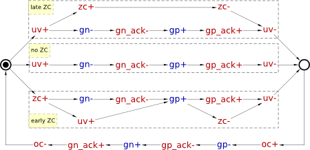
Note that this STG is just a cosmetic improvement over the previous one and this step can safely be skipped. This does not affect the verification and synthesis, but it does improve the visual representation and thus is important from the designer's perspective.
Verification of specification
Activate the simulation tool ![[M] Simulate](../../help/editor_tools-simulate.png "[M] Simulate") and exercise the obtained STG model. Click one of the enabled signal transitions (they are highlighted in orange) to evaluate the STG into the next state. Make sure the simulation traces correspond to those intended by the informal specification of the phase diagram.
and exercise the obtained STG model. Click one of the enabled signal transitions (they are highlighted in orange) to evaluate the STG into the next state. Make sure the simulation traces correspond to those intended by the informal specification of the phase diagram.
Before proceeding to the synthesis step verify the specification for consistency (i.e. that the rising and falling phases of each signal alternate in all possible execution traces), deadlock-freeness and output-persistency. These can be done via Verification menu.
Another property one has to verify is that PMOS and NMOS transistors are never ON simultaneously (which would lead to a short-circuit), i.e. that signals gp and gn are never high at the same time. This custom property can be formulated as a reachability analysis problem using Reach language:
- Open the Custom property definition window by selecting Verification→Custom properties [MPSat]… menu.
- In MPSat settings set the Mode into STG reachability analysis and the Solution into minimise cost function.
- Enter a Reach expression that identifies the short-circuit, i.e. both
gpandgnsignals are high –$S"gp" & $S"gn".1) - Select unsatisfiable to denote that the property holds if predicate is unsatisfiable.
- Save this property as a preset for future use, e.g. under the name short circuit check.
The whole custom property window should look as follows.

When you click the Run button the STG will be searched for a state where the Reach expression evaluates to True. If such a state exists then the Reach predicate is satisfiable and the property is violated. Otherwise, the property holds.
If the verified property is violated then a trace leading to the problematic state is reported. This trace can be simulated to diagnose the problem and correct it at the level of STG specification.
Note that the property that signals gp and gn are never high at the same time is not sufficient to guarantee the absence of short-circuits. Indeed, the PMOS and NMOS transistors are big and slow, and so if e.g. gp+ happens immediately after gn-, a transient short-circuit may be possible even though the property holds. In fact, the signals gp_ack and gn_ack were introduced specifically to detect the completion of the switching of the corresponding transistors, making it possible to avoid such short-circuits. Hence, a stronger correctness property ensuring that gp cannot be high whenever gn or gn_ack is high, and similarly gn cannot be high whenever gp or gp_ack is high, can be formulated as follows: ($S"gp" | $S"gp_ack") & ($S"gn" | $S"gn_ack").2) Verify that this stronger property also holds for the above STG model.
Synthesis
The STG specification can now be synthesised into an asynchronous circuit implementation either with Petrify or MPSat backend tools via Synthesis menu.
A complex-gate solution obtained with Petrify (via Complex gate [Petrify] menu) is as follows (note that solution is not unique and you may get a slightly different set of equations):
[gp] = uv gn_ack' + gp_ack oc'; [gn] = zc' uv' gp_ack';
Using De Morgan's law one can derive the following negative gate implementation:
[gp] = ((gn_ack + uv') (oc + gp_ack'))'; [gn] = (zc + uv + gp_ack)';
These equations can be mapped to complex-gates with the following functions: Z=((A+B')*(C+D'))' for gp and Z=(A+B+C)' for gn. Let us call the former gate OAI2I2I and the later NR3.
Circuit designers use hardware description languages, such as Verilog or VHDL, to precisely describe the circuit. For example, the association of the ports to the gates' pins can be described by the following Verilog module (if you are not familiar with Verilog you can safely skip this part as it is not required by the rest of the tutorial):
module control (oc, uv, zc, gp_ack, gn_ack, gp, gn); input oc, uv, zc; input gp_ack, gn_ack; output gp, gn; OAI2I2I inst_gp (.A(gn_ack), .B(uv), .C(oc), .D(gp_ack), .Z(gp)); NR3 inst_gn (.A(zc), .B(uv), .C(gp_ack), .Z(gn)); endmodule
Circuit capturing
Workcraft can automatically derive a circuit from the synthesis output of Petrify. For this open the Edit→Preferences… window and under Models→Digital Circuit leaf enable the Import synthesis result checkbox. However, for the purpose of this exercise please capture the circuit schematics manually.
Create a new Digital Circuit work called circuit-buck-cg and capture the implementation suggested by Petrify in the form of a gate-level netlist.
- Create a Digital Circuit work circuit-buck-cg.
- Add a functional component with the set function
((A + B') * (C + D'))'.3) Rename it toinst_gpand change its rendering type to GATE. - Add a functional component with the set function
(A + B + C)'.4) Rename it toinst_gnand change its rendering type to GATE. - Create two output ports
gpandgn. - Connect the output of
inst_gpto thegpport and the output ofinst_gngate to thegnport. - Create input ports
gn_ack,oc,uv,zcandgp_ack. - Connect the input port to the corresponding pins of the
inst_gpandinst_gngates. To fork a wire just start a connection from an existing wire - a joint point will be automatically created. - Set the initial state of
gnandgn_acksignals to1. For this select the corresponding ports and in the Property editor tick the Init to one check box.
The captured circuit should look as follows:
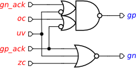
Verification of implementation
Activate the simulation tool and simulate the captured complex gate implementation of the buck control. Ports, pins and wires are colour-coded: blue means low level and red means high level of the signal. Excited pins and ports are highlighted in orange.
Click an excited pin to toggle its logical value – the circuit will evaluate to the next state where new set of signals will be enabled. The sequence of signal events is recorded in the simulation trace and can be subsequently replayed for analysing the circuit's behaviour.
Note that switching of input ports is not restricted. Environment can change them at any time causing unspecified behaviour of the circuit. One can restrict this behaviour by composing the circuit with the original STG specification of its contract with the environment:
- Activate selection tool and make sure nothing is selected – the Property editor will show the properties of the whole circuit.
- Click the Environment URI property - a file browser will pop up. Locate the stg-buck-scenarios_merged file and open it. A path to that file will be copied to the Environment URI property.5)
Now circuit verification will be conducted in the context of the environment that behaves according to STG in stg-buck-scenarios_merged file. Check the circuit for hazards, deadlocks and verify that it conforms to the environment specification. All these verification steps can be run via Verification→Conformation, deadlock and hazard (reuse unfolding) [MPSat] menu.
Try to alter the circuit and verify if it still conforms to the environment, is deadlock-free and operates without hazards.
Alternative implementations (optional)
When synthesising a complex-gate implementation with MPSat (via Complex gate [MPSat] menu), three alternative implementations of gp are computed:
Signal gp (cost 4) Triggers (underapproximation): oc uv gn_ack Context: gp Equation (4 lits): uv gn_ack' + oc' gp Context: zc Equation (4 lits): gn_ack' (oc' zc' + uv) Context: gp_ack Equation (4 lits): uv gn_ack' + oc' gp_ack
Note that:
- The last implementation coincides with the one obtained by Petrify.
- Signals
oc,uv, andgn_ackare the triggers ofgp, i.e. their firing can enablegp.- The triggers can be found by inspecting the STG: there are arcs
gn_ack-→gp+(in each of the three scenarios),uv+→gp+(in the “early ZC” scenario), andoc+→gp-(in the reset part). - Triggers are always in the support — they occur in each of the three equations above.
- Different context signals can be added to the triggers to form a support, in this case either of
gp,zcorgp_ackcan be used.
The first implementation uses gp itself as a context signal, which results in a gate with feedback:
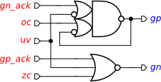
This implementation is particularly interesting, as it suggests that gp might be implemented by a latch (i.e. a state-holding element) rather than a combinational gate. Below we explore some such implementations.
Standard-C implementation
The standard-C architecture (a.k.a. “monotonic covers”) is shown in the picture below. It uses a C-element as the state-holding element that is driven by two combinational gates computing the Set and Reset functions of the implemented signal.
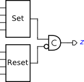
The standard-C implementation of the buck STG can be synthesised using Synthesis→Standard C-element [MPSat] menu as follows (note that solution is not unique and you may get a slightly different set of equations):
SOLUTION 0: Signal gn SET (cost 2) Triggers (underapproximation): gp_ack Context: oc gn Equation (2 lits): oc gp_ack' Context: uv zc gn Equation (3 lits): uv' zc' gp_ack' SOLUTION 1: Signal gn RESET (cost 2) Triggers (underapproximation): uv zc Context: gn Equation (2 lits): zc + uv SOLUTION 2: Signal gp SET (cost 2) Triggers (underapproximation): uv gn_ack Context: gp Equation (2 lits): uv gn_ack' SOLUTION 3: Signal gp RESET (cost 1) Triggers (underapproximation): oc Context: gp Equation (1 lits): oc
These equations provide the Set and Reset functions for gn and gp. Note that:
- Two alternative implementations are suggested for the Set function of
gn. - There is no benefit in implementing
gnusing standard-C architecture,6) as the original complex-gate implementation is simpler. - The standard-C implementation of
gpis nicer than the complex-gate one, in particular it does away with that ugly 4-input gate that may be absent from the gate library.
The resulting circuit is as follows:
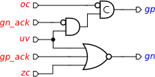
Do not forget to verify this solution w.r.t. the original STG as described above for the complex-gate implementation! In theory, the synthesised implementation is correct-by-construction, but in practice tools have bugs 
Logic decomposition and technology mapping
Complex-gate and standard-C syntheses are oblivious to the gate library. Hence, the implementations they yield may be too large to be implemented by a single gate available in the gate library. Unfortunately, breaking up a gate into smaller ones, when performed naïvely, generally yields an incorrect circuit. In fact, logic decomposition in the context of speed-independent circuits is a very difficult problem, that cannot always be solved. Petrify and MPSat backend tools do a good job in many situations, but occasionally they fail to converge to a solution and a manual intervention by the designer is required.
Currently the gate library called petrify.lib is used for technology mapping. The decomposed and mapped implementation of the buck STG can be synthesised using Synthesis→Technology mapping [Petrify] or Synthesis→Technology mapping [MPSat] menu. E.g. Petrify's solution is as follows (note that solution is not unique and you may get a slightly different set of equations):
[gn] = zc' uv' gp_ack'; # gate nor3:combinational #PRAGMA: zero delay [1] = uv'; # gate inv:combinational #PRAGMA: zero delay [2] = gp'; # gate inv:combinational [gp] = [2]' oc' + [1]' gn_ack'; # gate oai22:combinational
This solution corresponds to the original complex-gate implementation: gn is implemented by gate nor3:combinational, and gp is implemented by two inverters inv:combinational and gate oai22:combinational. The two #PRAGMAs state the assumption that the delays of the two inverters must be negligible. This is usually unproblematic as long as such input inverters are placed next to the main gate, but in some situations this assumption may be questionable; moreover, this assumption introduces extra constraints that have to be satisfied during placing and routing.
Let us try to decompose the implementation of gp into gates/latches with at most two inputs. In the Edit→Preferences dialog, select External tools→MPSat and type -g2 in the Additional arguments property. This will pass an extra command line option to MPSat, which will restrict it to gates/latches with at most two inputs. Then select Synthesis→Technology mapping [MPSat] to obtain the following implementation of gp (note that solution is not unique and you may get a slightly different set of equations):
Signal gp (cost 72) Triggers (underapproximation): oc uv gn_ack Context: gp Equation: gn_ack' (oc' zc' + uv) Gate rs_nor:asynch, sub-functions: gn_ack + oc or2:combinational (inversions: 00|0) uv delay:asynch (inversions: 0|0)
Do not forget to delete the -g2 option from the preferences, to prevent permanently restricting MPSat to 2-input gates!
This implementation of gp uses reset-dominant RS latch rs_nor:asynch and gate or2:combinational (delay:asynch is just a wire — there is no need to insert an explicit delay).
MPSat also finds a decomposition of gn into 2-input gates/latches, which is the same as the standard-C implementation considered above. However, the complex-gate implementation of gn was already good enough, and so we are only interested in decomposing the implementation of gp.
This circuit can be captured in Workcraft as follows:
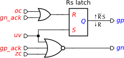
Note that the properties for the reset dominant RS latch are set as follows: Render type is Box, Set function is R'*S, and Reset function is R.
This solution has no input inverters and is implementable in most gate libraries.
Do not forget to verify this solution w.r.t. the original STG as described above for the complex-gate implementation! In theory, the synthesised implementation is correct-by-construction, but in practice tools have bugs 
Solutions
Download all the Workcraft models discussed in this tutorial here:
Buck control models (37.86 KiB, 4w ago)
$S means the value of a signal, "gp" and "gn" are the names of the signals and & is Boolean AND.| is Boolean OR.